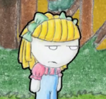
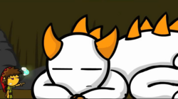

Vete a la Versh
 De: La Frikipedia, la enciclopedia extremadamente seria.
De: La Frikipedia, la enciclopedia extremadamente seria.
De la serie Programas de TV:
Un tipo con la Bilirrubina alta y otro hecho de semen
| Idioma original:
|
Totonaca
|
| Creador:
|
Roberto "Darkar" Alatriz
|
| Duración:
|
De 1 a 2 minutos (30 minutos si no puedes dejar de verlos o no entiendes)
|
| No. Episodios:
|
21 (18 normales, 2 especiales de navidad y un especial de jalogüin)
|
| No. Temporadas:
|
2
|
| ¿Aún se transmite?:
|
Solo en Newgrounds y la página web.
|
| Género:
|
Masculinos
|
| Nivel de frikismo:
|
Medio
|
| Películas:
|
Hasta ahora ninguna
|
No, en serio ¿Que tienen de gracioso un tipo con la Bilirrubina alta y otro hecho de semen?
Vete a la Versh es un programa televisivo transmitido por Roberto "Darkar" Alatriz, Mexicano nacido en Miami acerca de Darkar y Mecoboy (adivinaste, un tipo con la Bilirrubina alta y otro hecho de semen). Gracias a tan gracioso elemento clave (un tipo con la Bilirrubina alta y otro hecho de semen) actualmente cuenta con 34,000 y pico Suscriptores y 5,000 y pico amigos. Su audiencia se caracterisa por lamerle las pelotas agradecer a su creador por cada capítulo nuevo, además de la particular forma de escribir con faltas de ortografía preocupantes. No se sabe si la serie hace estúpida a la gente o sólo la gente estúpida es la que la ve. Su obra es vista en el canal de Youtube, Newgrounds y DevinatArt.
Trama
La trama es bastante simple, trata acerca de los protagonistas metidos en cualquier situación aleatoria donde generalmente uno de los 2 termina golpeado, encabronado, llorando, aburrido, quemado, muerto, inconsciente, explotado, con la bilirrubina alta o hecho semen.
Personajes
Esta serie utiliza típicas y muy comunes Marcas Mexicanas
- Darkar: La posible
si no es que improbable representación en dibujo animado del autor, guionista, coreógrafo, editor, y productor de la serie; generalmente se la pasa comprando videojuegos, viendo caricaturas, golpeando, insultado, peleando con Mecoboy o con la Bilirrubina alta. Esta basado en un adolescente pajillero que se mata a jugar a la "Leyenda de Mierda digo de Melda..
Voz por: Darkar
- Mecoboy: La posible
y más probable teoría de este personaje es un supermegalefazo creado por Darkar mientras estaba en la Fuerza Aerea Peruana (conocida como FAP) y de ahí aparece. Siempre termina golpeado, insultado, peleado, explotado o hecho semen por Darkar.
Voz por: Darkar
- La niña que llora: La niña que llora es un personaje bastante obvio, en los episodios que aparece siempre es amenazada por Darkar o en su defecto insultada. Aparece en los capítulos Perra, El Chancro Voraz, Ricitos de Oro y Garnachas
Voz por: Aileen, la novia de Darkar
- El Canciller del Pop: Mejor conocido como Miguel Joaquín, es una posible y bastante probable representación del fallecido Michael Jackson, su rol principal (y único capítulo) fue el de robarse a un niño para que fuera a su casa, aparece en el capítulo de mismo nombre, reaparece en "Experiencia 3D".
Voz por: Darkar
- El Chancro Voraz: Del capítulo del mismo nombre, es un monstruo cuyo hábitat se encuentra en una canción de Darkar (para ser preciso en sus Huevos), este se come a Darkar en la canción.
Voz por: No Habla
- Gavi: Aparece en el capítulo La leyenda de Melda y el Ukulele del tiempo Es un hada encomendada a buscar a Darkar para que le quite su malestar al pinche árbol que habla.
Voz por: Darkar
- El pinche árbol que habla: Aparece en el capítulo La leyenda de Melda y el Ukulele del tiempo, es un pinche árbol con una araña en la próstata, la cual Darkar/Melda debe eliminar.
Voz por: Darkar
- Santa: Aparece en el especial de Navidad, es un Santa de centro comercial que dice "pendejadas".
Voz por: Darkar
- Jorge y Luis: Aparecen en el capítulo Pingüinos, son 2 pingüinos que se hacen Gay.
Voz por: Darkar
- Chino: Aparece en el capítulo Zumbido Asesino, el cual trata que cada vez que envías un zumbido por Mésenller un Chino muere.
Voz por: Amigo Chino de Intercambio
- La perra del puesto de tacos: Solo aparece en el episodio de garnachas cuando Darkar le pide un taco y la tía se encabrona poniéndole picante de mas y causándole diarrea.
Voz por: No habla
- Buho: Aparece en el capítulo "La Leyenda de Melda-Parte 2", es un buho que llevará a Darkar con la princesa Melda
Voz por: Darkar
- La Princesa Melda: Aparece en el capítulo "La Leyenda de Melda-Parte 2", es la princesa que ayudará a Darkar con sus papeles si le lleva la piedra verde en forma de tamarindo, pero antes deberá de ayudarla con el cobrador de hacienda
Voz por:
- El Cobrador de Hacienda: Es
Mecoboy un cobrador que va todos los días al castillo para robarle la compañía al rey
Voz por: Darkar
- El Taquero: Un vendedor ambulante, el encomienda a Darkar con El Tunas.
Voz por:
- El Tunas: *En palabras del taquero* Es el jefe de la banda, acá chido, el mero mero y todo, ps bien acá, ps oh ps ora que si te parte toda tu puta madre. Al matar al dragón El Tunas le da "Piedra Roja en forma de Prostituta de la Zona Rosa que no sirve para nada".
- El Monstruo: Es
Mecoboy un asqueroso Dinosaurio que se la pasa jetón y tragando unas pinches piedras que ya le generaron un problema en el páncreas. Siempre le van a chingar.
- Miguelito: Es el niño que fue violado por el Canciller del Pop aparece en ese episodio y reaparece en Experiencia 3D. despues en Nalg´donals
El Pinche Árbol que Habla
La Perra del Puesto de Garnachas
Posiblemente se trate de Ash vestido de Darkar
El eterno rival de Darkar, Vagina
El Triforce gran poder así padrisisísimo
Capítulos

¡LAS RESORTERAS NUCLEARES PATENTADAS POR LA UNAM!
Episodio 1: Videojuegos
Darkar compra un videojuego para el MexBox llamado "Te agarré por ahí" donde en el año 3015 México toma el liderazgo del mundo, finalmente a Mecoboy no le interesa...
¡Hey
IP anónima! ¡ERES UNA
PERRA!
Episodio 2: Perra
Darkar va feliz por la calle gritándole a todo mundo Perra, hasta encontrarse a la Niña que Llora
Episodio 3: Marochan
Darkar corre al baño a tirar como 6 galones de orina que apagarían un incendio de esos de Canadá mientras Mecoboy come una Marochan (ojo, que no es Maruchan)
¿Sabías que los pingüinos se hacen gay por accidente?
Episodio 4: Pingüinos
Mecoboy observa un documental de Pingüinos en TV cuando Darkar comenta que estos se hacen Gay por accidente
Cállate tú pinche baboso!
Episodio 5: El Chancro Voraz
Darkar y La Niña que llora componen una canción para ese compañero que todos conocemos y aceptamos, y nos causa dolor Ah ja jaaai!
Te propongo un trato, te cambio el control, por un Sándwich de... jamón
Episodio 6: Controlando
Las caricaturas de Darkar ya empezaron, y están muy chidas...
Que haces? Chateando? Viendo Porno? Estas chateando y viendo porno? Estas viendo porno mientras chateas?
Episodio 7: Zumbido Asesino
¿Sabías que estadísticamente cada vez que mandas un zumbido un chino muere?
Esta bien, te daré una oportunidad, si adivinas mi nombre, te dejaré ir...
Episodio 8: El Canciller del Pop
Miguel Joaquín apareció para robarse a un niño, pero primero debe aprender a hacerlo bien...
Ay, no mames... Esas chingaderas si pican
Episodio 9: La Leyenda de Melda
Darkar ha comprado nada más y nada menos que; La leyenda de Melda y el Ukulele del Tiempo...
Técnica del Escroto Mortal del Dragón
Episodio 10: Un Día en la Playa
No hay nada más relajante que el sonido de las olas en el mar...
 Una vez, ricitos de oro iba corriendo feliz por el bosque, Bueno no estaba corriendo, estaba parada y no sonreía por pinche amargada...
Episodio 11: Ricitos de Oro
En este capítulo, Darkar nos contará la versión original de Ricitos de Oro...
-Qué le pasa? - Oh, no lo sé, lleva 25 minutos bailando en mi pierna
Episodio Especial: Navidad 2009
Hoy Darkar habló con Santa Claus y enfrentó cargos penales porque se lo agarró a putazos...
Déjame informarte que tienes un vello púbico en la cabeza
Episodio 12: Velleza
Darkar toma una ducha y encuentra algo para regalarle a Mecoboy
Hija de tu Puta Madre! Me dió Diarrea!...
Episodio 13: Garnachas
Darkar, Mecoboy y la niña que llora cantan una canción sobre una experiencia de Darkar en un puesto de tacos
Pendertuga, usa Embolia Cerebral ahora!
Episodio 14: Puchamon
Darkar tiene el nuevo juego Puchamon, ahora debe de ser el mejor entrenador y vencer a su eterno rival Vagina.
Tum tum tum tum tum... PIRULI!
Episodio 15: Misión:Posible
Darkar probará sus habilidades de espionaje robándole el ordenador a Mecoboy.
 ¡no vergas putas pinches mames!¡¿Cómo penes pretenden que voy a matar a un dragón culero de 250 metros con una espada de madera?!
Episodio 16 (Final de Temporada): La Leyenda de Melda-Parte 2
Después de que el Pinche Árbol que Habla traicionó su pacto, Darkar se ve envuelto en la problemática de ser un inmigrante ilegal en el Bosque Mágico de Chapultepec. Su travesía ahora lo lleva a buscar una solución en El Castillo, en donde deberá pedir la ayuda de la Princesa Melda.
Temporada 2
Episodio 1: La lámpara mágica
Cuando Darkar come una torta ahogada accidentalmente caga una pinche puta lámpara mágica, donde un genio está dispuesta a consederle 3 deseos (que clase de pendejada es esa??)
Episodio 2: Secreto en el Iceberg
En el iceberg se puede tener diversión como tener Tuíter, pescar ó tener sexo con un pingüino estar con amigos que busquen sexo con tigo divertidos sexualmente
Episodio 3: Experiencia 3D
Cuando te vas a las salas de cine a ver porno una película en 3D te dan siempre unos lentes que tal vez te de ganas de robarte, bueno en este capítulo Darkar se los roba de una manera altamente agresiva, naaaa es broma solo se fue corriendo el pinche gay, por que se fue a ver Cuando los pedrastras atacan en 3D se pone los lentes en su casa (que no es nada mas que un pinche sillón amarillo) asi que le dice a su amigo Mecoboy que ve su mano en tres de, su pito en cuatr... en cuat... en cinco de, hasta en equis de y se acaba la huevada.
Episodio 4: Puchamón - Parte 2
Darkar Ash se excita por haberle ganado a su rival de toda la vida que no conoce, Vagina. Se dirige al bosque y encuentra un Motapod. Ahí aprenderá lecciones importantes: 1) que su atractivo sexual es directamente proporcional a la cantidad de puchamones que tenga en posesión, 2) que los pezones en un hombre son tan inservibles como un Motapod, 3) que Pitochu tiene una perversa atracción sexual por los árboles (pinche rata adefésica), 4) aprende a eructar varias veces seguidas y a tirarse pedos con silenciador «Exacto... discreto, placentero y sin ningún tipo de vibración inesperada en los glúteos...», 6) que los Motapods pueden usarse a modo de piedras, 7) a contar (si no entiendes por qué, relee lo anterior pinche reggaetonero pendejo e ignorante). También tiene un encuentro sexual inesperado duelo Puchamón con un COLECCIONISTA DE INSECTOS CON UN SERIO PROBLEMA DE EYACULACIÓN PRECOZ (posiblemente un puberto con problemas hormonales que se esconde detras de ub arvusto porque probablemente es horrible). Se le diagnostica un problema gastrointestinal.
Enlaces Externos
Autor(es):
- Daikataro
- Veni Vidi Vici
- Dark temptation
- SakuraMiya
- Kevrochi
- Frikosino
- Fernando865
- Ricardoxxxlo
- Gñapero Solitario
- Gororo
Frikipedia 2005-2016, Licencia
GFDL 1.2 - Extraído por FrikiLeaks